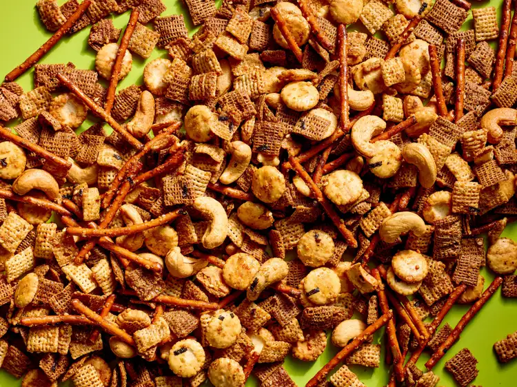

Maple-Soy Snack Mix

Description
Umami-forward soy sauce complements sweet maple syrup in this crispy, crunchy maple-soy snack mix.
Ingredients
- 1/3 cup pure maple syrup
- 1/4 cup melted butter
- 1 tablespoon less-sodium soy sauce
- 1 teaspoon vanilla extract
- 1 cup oyster crackers
- 1 cup mini pretzel sticks or mini twists
- 1/2 cup unsalted cashews
- 3 tablespoons furikake seasoning
Instructions
- Preheat the oven to 250 degrees F (121 degrees C).
- Whisk together pure maple syrup, melted butter, soy sauce, and vanilla extract in a large bowl.
- Add rice square cereal, wheat square cereal, oyster crackers, mini pretzel sticks, and cashews. Toss to coat. Sprinkle with furikake seasoning. Toss to coat evenly.
- Spread on a 13x18 inch rimmed baking sheet. Bake, stirring every 15 minutes, until well-toasted and fragrant, 45 to 50 minutes. Let cool completely before serving.
Home